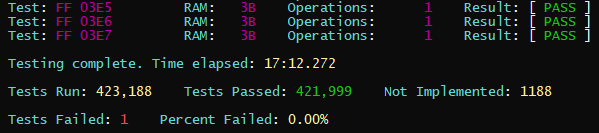
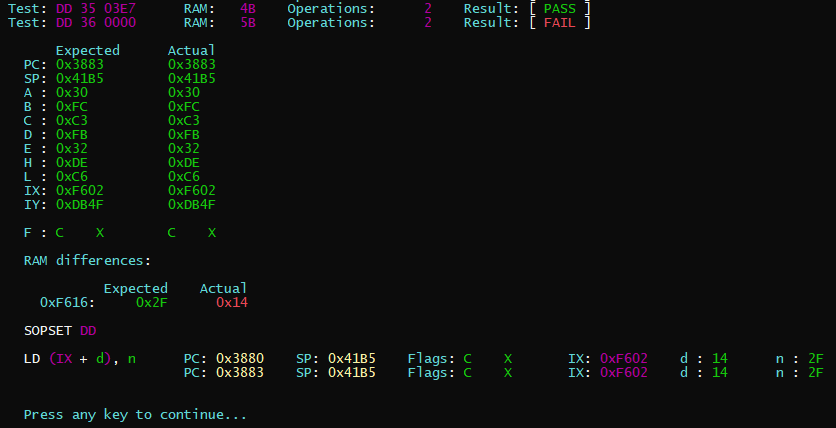
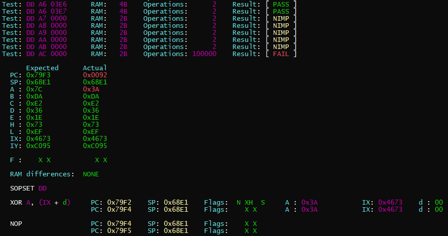
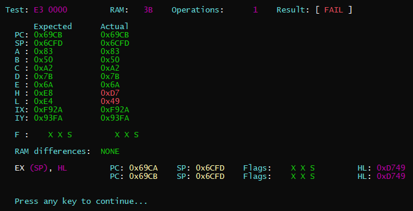

ZXE - Milestone 1
Well, a milestone of sorts...
Grinding through the instruction set, I have implemented the "Main Instructions", "IX Instructions (DD)" and "IY Instructions (FD)" listed here.
The results of my test suite are currently:

So, approximately 1,188 more instructions to implement... Though there are genuinely gaps in the set, so it won't be this many.
Also, I'm going to take this opportunity to share some screenshots of the output for failed tests. This has proved extremely useful in troubleshooting.



Source code here if anyone wants to play with it.